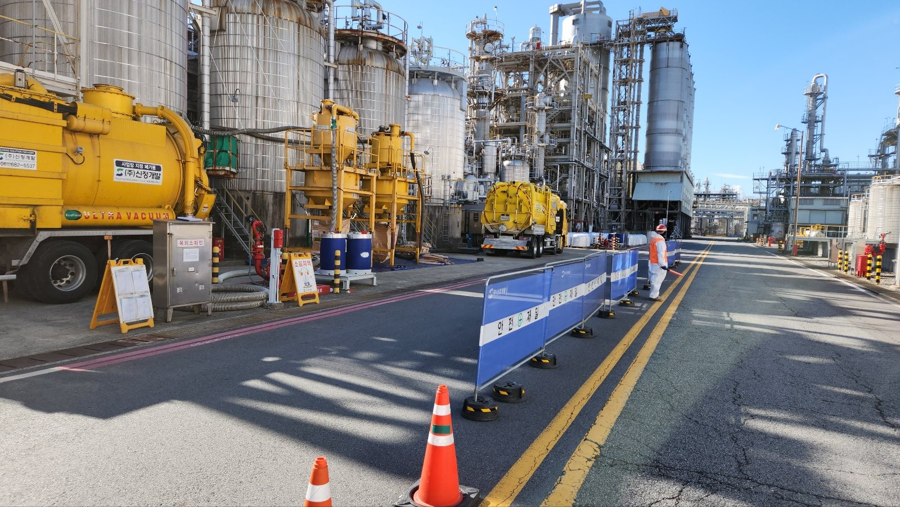
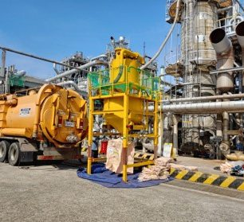
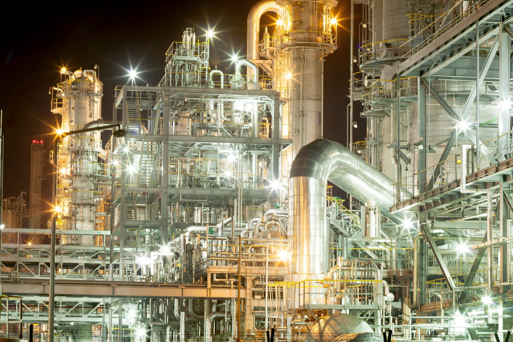
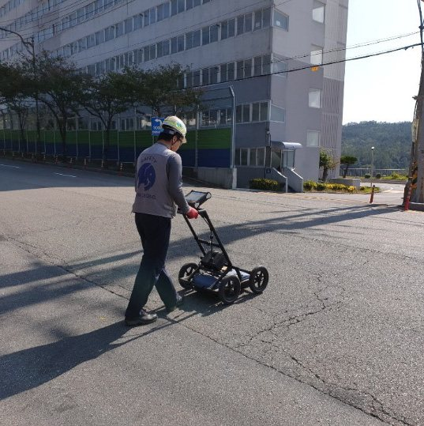
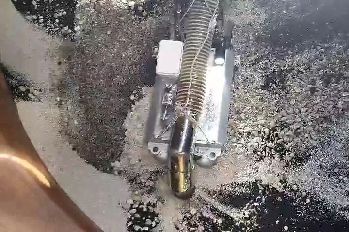
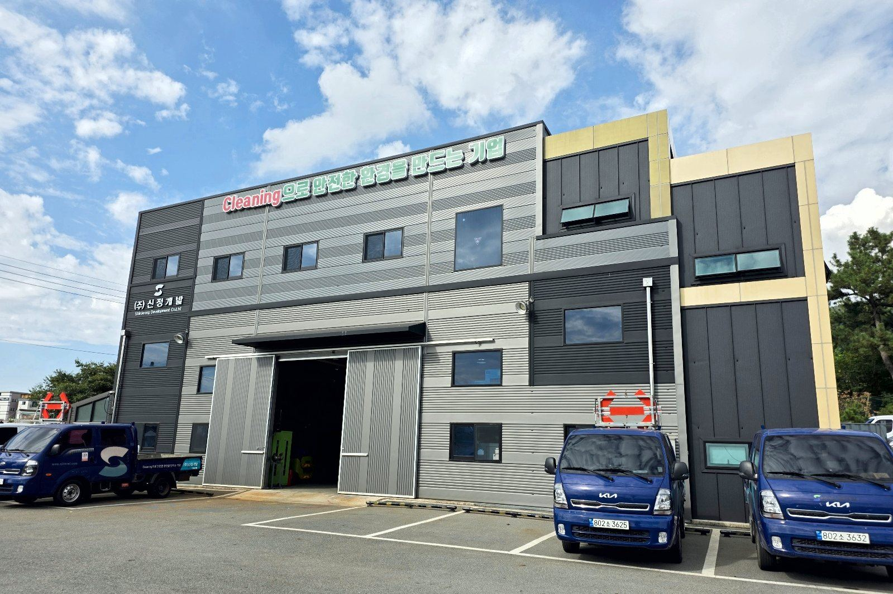

신정개발의 원칙
사람이 없는 곳에
인명 사고도 없다.
현장마다 안전을 지키고, 고객을 배려하며,
내일의 희망을 만듭니다.
- 5세대무인 흡입 로봇
- 5건로봇 · 준설 관련 등록 특허
- 17건로봇 투입 작업 기록 (2021~2023)

무인 솔루션
다섯 종류의 로봇이 탱크·반응기·배수로·관로 안에 들어가 작업합니다. 작업자는 밖에서 조종하고, 위험이 줄어든 뒤에 들어갑니다.


로봇이 하는 일
옆으로 넘겨 보기 →


- 석유화학·정유 플랜트
- 발전 설비
- 상·하수도
출처: 회사소개서(2024) · 기술소개서(2025)
사업분야
다섯 가지 일을 합니다. 어느 현장에서, 무엇을 투입해 하는지 함께 적었습니다.

설비 클리닝
- 현장
- 탱크 · Pond · 배수로 · R.T.O
- 투입
- 흡입 로봇 · 제어 차량 · 진공흡입차

촉매·충진물 작업
- 현장
- 반응기 · 흡착탑 · 건조기
- 투입
- 흡입 로봇 · 분리장치 · 건식 흡입차

화학세정
- 현장
- 배관 · 열교환기 · 냉각탑 · 보일러
- 투입
- 화학세정용 내산장비

준설·슬러지 회수
- 현장
- 하수관 · 오수관 · 처리시설
- 투입
- 무인준설로봇 · 무인로더 · 데칸타

관로·지하 조사 및 보수
- 현장
- 관로 · 맨홀 · 지하매설물
- 투입
- 관로 CCTV 로봇 · CCTV 조사차량 · GPR
주요 수행 이력
2020~2023년, 4개 발주처와 4년 연속 단가계약을 맺었습니다. 로봇을 투입한 작업과 분야별 실적을 모았습니다.

로봇 투입 작업
로봇이 설비 안에서 내부 잔여 위험 물질을 1차 회수합니다. 작업자는 설비 밖 Control Car에서 원격 조정하고 CCTV로 내부를 감시하며, 위험 물질을 최소화한 뒤 투입되어 내부 최종 잔여물을 제거합니다.
구성로봇 · CCTV · 제어 차량 · 진공흡입차 · 분리장치
로봇 투입이 기록된 작업 2021~2023
- 폐수처리장 유량조정조 슬러지 준설 작업로봇
- 내부 Cleaning 작업 (로봇 적용)
- 촉매 교체 공사촉매 · 무인로봇
- Reactor Robot 촉매 Unloading촉매 · 무인로봇
- MDEA Storage Tank 내부 Robot Cleaning무인로봇
- Skimming 작업 & 흡착제 Loading 작업촉매 · 무인로봇
- 촉매 교체 공사촉매 · 무인로봇
- 1차 반응기 촉매 교체 도급 공사촉매 · 무인로봇
- Catalyst (ID 1,800) 촉매 제거 · Normal기술소개서
- Drum — Vessel/Drum Cleaning · Phenol기술소개서
- 전처리반응기 촉매교체 작업 (무인화)촉매 · 무인로봇
- WWT Tank (ID 20,000) Tank Cleaning기술소개서
- Catalyst (ID 1,600) 촉매 제거기술소개서
- Catalyst Replacement촉매 · 무인로봇
- Clay Filter (ID 1,800) · N₂ 분위기 · 4회기술소개서
- Clay Filter 로봇을 이용한 충진물 Skimming 작업촉매 · 무인로봇
- 로봇을 활용한 충진물 Unloading Test 작업촉매 · 무인로봇
2023년은 회사소개서(2024), 2021~2022년은 기술소개서(2025) 기준

설비 클리닝
탱크·Pond·배수로 안의 잔류물과 퇴적물을 제거합니다. 위험한 내부에는 흡입 로봇을 먼저 넣고, 작업자는 밖에서 조종합니다.
수행 실적 2020~2023
- Pond Cleaning 단가계약
- 설비 내부 Cleaning 로봇 적용
- 위험물 저장탱크 개방검사 Cleaning

촉매·충진물 작업
반응기의 촉매와 충진물을 꺼내고 교체합니다.
수행 실적 2022~2023
- 반응기 로봇 촉매 Unloading 로봇 적용
- 건조제 교체
- 흡착제 교체
- 대정비 촉매 교체

준설·슬러지 회수
하수관과 처리시설의 퇴적물을 준설하고 슬러지를 회수합니다.
수행 실적 2020~2023
- 준설작업 단가계약
- 폐수처리장 유량조정조 슬러지 준설 로봇 적용
- 공정 내 배수로 슬러지 준설


사진은 분야별 작업 장면과 장비이며, 목록에 적힌 실적의 현장을 찍은 것은 아닙니다.

1992년부터 한 길.
성실하게 쌓아 온 시간이
지금의 신정개발입니다.
1992년 시작한 신정개발은 산업설비와 환경시설을 다루는 클리닝 전문기업입니다. 설비 유지보수, 촉매·충진물 작업, 준설과 시설 조사·보수를 해 왔습니다. 위험한 설비 안에는 기업부설연구소에서 개발한 로봇이 먼저 들어가 위험 물질을 걷어내고, 작업자는 그다음에 들어갑니다.
- 1992설립
- 2017기업부설연구소 설립
- 5세대무인 흡입 로봇 (기술소개서)
환경ISO 14001 환경경영 인증 (2017) · 환경부장관상 (2007) · 일반·지정폐기물 수집·운반업 허가 (2004·2006)